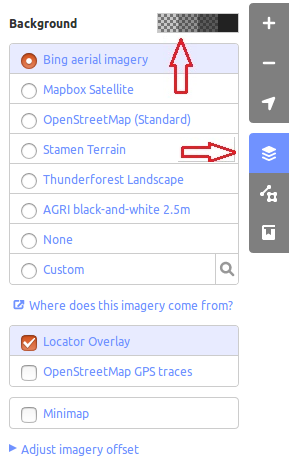
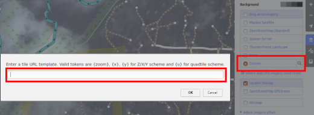
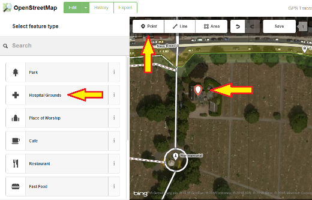

Snabbstart för iD-redigerare¶
ID-redigeraren är de facto den webbläsarbaserade OpenStreetMap-redigeraren. iD är snabb och enkel att använda och möjliggör kartläggning från olika datakällor, t.ex. satellit- och flygbilder, GPS, Field Papers eller Mapillary.
ID-redigeraren är ett utmärkt sätt att redigera små och enkla ändringar som inte kräver de avancerade funktionerna i JOSM (en mer avancerad mappningsredigerare). I det här kapitlet beskrivs grunderna för redigering med iD.
Innehåll
Starta iD-redigerare¶
ID-redigeraren kräver en aktiv anslutning till Internet.
Öppna din webbläsare och gå till OpenStreetMap-webbplatsen på https://www.openstreetmap.org.
** Logga in** med ditt OpenStreetMap-konto.
Panorera och zooma kartan till det område som du vill redigera. Du kan panorera genom att hålla vänster musknapp intryckt och dra kartan till önskat område.
Klicka på den lilla pilen bredvid Redigera och sedan på Redigera med iD (inbäddad redigerare).


- [1] Edit Feature Panel: Denna panel visar taggar från objektet
som valts på kartan. Du kan lägga till eller redigera taggar från den här panelen.
[2] Tools: Denna panel visar grundläggande redigeringsverktyg.
[3] Kartpanel: Denna panel visar olika konfigurationsfunktioner.
- [4] Informationspanel: Denna panel visar olika information, t.ex
skalstrecket och vilka användare som har bidragit till området.
Konfigurera bakgrundslagret¶
Klicka på knappen Bakgrundsinställningar eller använd snabbkommandotangenten b.


För att ändra ljusstyrka klicka på en av dessa rutor, nivåerna är 100%, 75%, 50% och 25%

Du kan också ändra bakgrundslagret baserat på önskad leverantör av plattor (standard är Bing Aerial Imagery).
You can add your own map tiles by clicking on Custom. For example, if you want to add a Field Paper [1], click Custom then click on the magnifying glass (search) icon to open the following window:

Ange din FieldPaper snapshot URL, som kommer att vara ungefär så här: http://fieldpapers.org/snapshots/cqhmf2v9#18/37.80593/-122.22715
För att visa GPS-spår från din dator (GPX-format), dra och släpp GPX-filen till iD-redigerare.
Klicka på rutan för att aktivera OpenStreetMap GPS-spår. På bilden nedan visas offentliga GPS-spår i olika färger, vilket indikerar färdriktningen.

Om det finns en bildförskjutning kan den korrigeras genom att klicka på Fix Alignment.

Klicka på navigeringsknapparna för att flytta bilderna. Klicka på återställningsknappen för att återgå till standardpositionen.

Lägga till poäng¶
För att lägga till en ny punkt klickar du på knappen Point. 
Din muspekare ändras till ett plustecken (+). Klicka nu på en position som du känner till för att markera en plats. Om du t.ex. vet att det finns ett sjukhus i ditt område klickar du på sjukhusbyggnadens position.

Lägg märke till att en ny punkt har lagts till. Samtidigt ändras den vänstra panelen så att den visar ett formulär där du kan välja attribut för objektet. Klicka på Hospital Grounds för att märka punkten som ett sjukhus.

Du kan använda formulären för att fylla i detaljerad information om din punkt. Du kan fylla i sjukhusets namn, adress och/eller annan ytterligare information. Observera att varje funktion har olika alternativ, beroende på vilken tagg du väljer från funktionspanelen.
Om du gör ett misstag, t.ex. placerar punkten fel, kan du flytta den till en ny plats genom att hålla ned vänster musknapp på punkten och dra den. Om du vill radera punkten klickar du med vänster musknapp på punkten, aktiverar snabbmenyn genom att klicka med höger musknapp och klickar sedan på knappen som ser ut som en papperskorg.

En ”punkt” som skapas i iD-redigeraren är egentligen en fristående ”nod” med en uppsättning ”taggar” på.
Ritning av linjer¶
För att lägga till en ny rad, klicka på knappen Rad. 
Din muspekare ändras till ett plustecken (+). Hitta en väg som inte har ritats in på kartan och spåra den. Klicka en gång på en punkt där vägsegmentet börjar, flytta musen och klicka för att lägga till ytterligare punkter. Dubbelklicka för att avsluta ritningsprocessen. Lägg märke till panelen till vänster.

Precis som med en punkt ska du välja lämpliga taggar för din rad.
Du kan dra punkter från linjen genom att klicka med vänster musknapp på en punkt och dra den.
Du kan också flytta hela linjen genom att markera den och välja verktyget Flytta. Dra sedan linjen till en ny position.

När du klickar med vänster musknapp på en enskild punkt (nod) på linjen och klickar med höger musknapp för att aktivera snabbmenyn, visas dessa verktyg:
Ta bort punkt från linje.
Koppla bort punkt från linje.

Dela en linje i två linjer från den punkt du har valt.

När du klickar med vänster musknapp på en linje (men inte på en punkt) visas dessa verktyg:
Ta bort raden.
Skapa en cirkel från en linje (endast aktiv om linjen är sluten)

Flytta linjen
Forma en fyrkant av en linje (endast aktiv om linjen är sluten)

Omvänd linjestyrning (bra för floder och enkelriktade gator)

En ”linje” som skapas i iD-redigeraren är egentligen en ”väg” med ”taggar” på.
Observera
En särskild anmärkning om Deleting: I allmänhet bör du undvika att radera andras mappning om den bara behöver förbättras. Du kan radera dina egna misstag, men du bör försöka justera andras mappade objekt om de behöver ändras. Detta bevarar objektens historia i OSM-databasen och är respektfullt mot andra kartläggare. Om du verkligen tycker att något ska raderas, överväg att fråga den ursprungliga kartläggaren eller någon av OSM:s e-postlistor om det först.
Ritning av former (polygoner)¶
För att lägga till en ny flersidig form klickar du på knappen Area.

Din muspekare ändras till ett plustecken (+). Försök att rita en byggnad med hjälp av bilderna som vägledning.
Du kommer att märka att färgen på din form ändras beroende på de attribut som du tilldelar den.

De verktyg som finns tillgängliga när du markerar en form och aktiverar snabbmenyn med höger musknapp liknar de som finns när du klickar på en linje.
En ”polygon” i iD-redigeraren är egentligen en ”sluten väg” med taggar på.
Ritning av multipolygoner¶
Ibland måste man rita en polygon som inte bara har en yttre kontur utan också en eller flera inre konturer. Tänk bara på byggnader med innergårdar eller sjöar med öar. Rita inte alla dessa sätt i en linje så att de inre konturerna hänger ut från den yttre konturen. Rita hellre dessa konturer separat, fäst taggar endast på den yttre konturen, markera alla konturer och tryck på c för att kombinera dem till vad som kallas en multipolygon.

När du markerar någon av konturerna i den nyskapade multipolygonen kan du till vänster se vilka multipolygoner den tillhör

Spara dina ändringar¶
När (och om) du vill spara dina ändringar på OpenStreetMap klickar du på knappen Save. Panelen till vänster kommer att visa uppladdningspanelen.

Skriv en kommentar om dina ändringar och klicka på Spara.
Observera
Om du har redigerat samma funktion (punkt, väg eller område) samtidigt som en annan person redigerade den, kommer du att få en varning om att dina redigeringar inte kan laddas upp förrän du har löst konflikterna - välj vems redigeringar du vill acceptera och ladda upp dina ändringar. Att lösa konflikter innebär ofta att du måste acceptera den andra personens ändringar, och i så fall kommer du förmodligen att vilja återvända till funktionen i fråga och redigera igen (**den här gången spara strax efter redigeringen för att försöka undvika en konflikt igen!*).*
Lägg till ytterligare information och anpassade taggar¶
När du redigerar ett objekt ser du en rad ikoner längst ned i attributpanelen. Du kan lägga till ytterligare information genom att klicka på dessa ikoner:
Lägg till höjd

Lägg till anteckningar

Lägg till kontakter / telefonnummer

Lägg till källtagg

Lägg till webbplats

Lägg till Wikipedia-länk

{kind=link}
Du kan också lägga till egna taggar genom att klicka på Alla taggar. 
Detta visar alla taggar som är kopplade till funktionen.

Klicka på plustecknet (+) för att lägga till nycklar och värden eller klicka på papperskorgsikonen för att ta bort taggar.
Hur vill du gå vidare?¶
Testa LearnOSM-dokumentationen, som denna snabbstart är hämtad från: https://learnosm.org/en/beginner/id-editor/
Webbplats: https://wiki.openstreetmap.org/wiki/ID